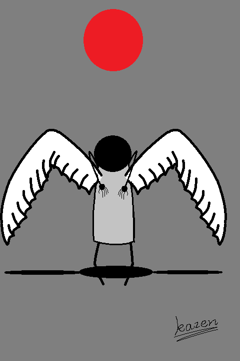

13:1 我又看见一个兽从海中上来，有十角七头，在十角上戴着十个冠冕，七头上有亵渎的名号。
And I stood upon the sand of the sea, and saw a beast rise up out of the sea, having seven heads
and ten horns, and upon his horns ten crowns, and upon his heads the name of blasphemy.
13:2 我所看见的兽，形状像豹，脚像熊的脚，口像狮子的口。那龙将自己的能力，座位，和大权柄，都给了他。
And the beast which I saw was like unto a leopard, and his feet were as the feet of a bear, and
his mouth as the mouth of a lion: and the dragon gave him his power, and his seat, and great
authority.
13:3 我看见兽的七头中，有一个似乎受了死伤。那死伤却医好了。全地的人，都希奇跟从那兽。
And I saw one of his heads as it were wounded to death; and his deadly wound was healed: and all
the world wondered after the beast.
13:4 又拜那龙，因为他将自己的权柄给了兽。也拜兽说，谁能比这兽，谁能与他交战呢。
And they worshipped the dragon which gave power unto the beast: and they worshipped the beast,
saying, Who is like unto the beast? who is able to make war with him?
13:5 又赐给他说夸大亵渎话的口。又有权柄赐给他，可以任意而行四十二个月。
And there was given unto him a mouth speaking great things and blasphemies; and power was given
unto him to continue forty and two months.
13:6 兽就开口向神说亵渎的话，亵渎神的名，并他的帐幕，以及那些住在天上的。
And he opened his mouth in blasphemy against God, to blaspheme his name, and his tabernacle, and
them that dwell in heaven.
13:7 又任凭他与圣徒争战，并且得胜。也把权柄赐给他，制伏各族各民各方各国。
And it was given unto him to make war with the saints, and to overcome them: and power was given
him over all kindreds, and tongues, and nations.
13:8 凡住在地上，名字从创世以来，没有记在被杀之羔羊生命册上的人，都要拜他。
And all that dwell upon the earth shall worship him, whose names are not written in the book of
life of the Lamb slain from the foundation of the world.
13:9 凡有耳的，就应当听。
If any man have an ear, let him hear.
13:10 掳掠人的必被掳掠。用刀杀人的，必被刀杀。圣徒的忍耐和信心，就是在此。
He that leadeth into captivity shall go into captivity: he that killeth with the sword must be
killed with the sword. Here is the patience and the faith of the saints.
13:11 我又看见另有一个兽从地中上来。有两角如同羊羔，说话好像龙。
And I beheld another beast coming up out of the earth; and he had two horns like a lamb, and he
spake as a dragon.
13:12 他在头一个兽面前，施行头一个兽所有的权柄。并且叫地和住在地上的人，拜那死伤医好的头一个兽。
And he exerciseth all the power of the first beast before him, and causeth the earth and them
which dwell therein to worship the first beast, whose deadly wound was healed.
13:13 又行大奇事，甚至在人面前，叫火从天降在地上。
And he doeth great wonders, so that he maketh fire come down from heaven on the earth in the
sight of men,
13:14 他因赐给他们权柄在兽面前能行奇事，就迷惑住在地上的人，说，要给那受刀伤还活着的兽作个像。
And deceiveth them that dwell on the earth by the means of those miracles which he had power to
do in the sight of the beast; saying to them that dwell on the earth, that they should make an
image to the beast, which had the wound by a sword, and did live.
13:15 又有权柄赐给他叫兽像有生气。并且能说话，又叫所有不拜兽像的人都被杀害。
And he had power to give life unto the image of the beast, that the image of the beast should
both speak, and cause that as many as would not worship the image of the beast should be killed.
13:16 他又叫众人，无论大小贫福，自主的，为奴的，都在右手上，或是在额上，受一个印记。
And he causeth all, both small and great, rich and poor, free and bond, to receive a mark in
their right hand, or in their foreheads:
13:17 除了那受印记，有了兽名，或有兽名数目的，都不得作买卖。
And that no man might buy or sell, save he that had the mark, or the name of the beast, or the
number of his name.
13:18 在这里有智慧。凡有聪明的，可以算计兽的数目，因为这是人的数目。他的数目是六百六十六。
Here is wisdom. Let him that hath understanding count the number of the beast: for it is the
number of a man; and his number is Six hundred threescore and six.


甚矣吾乏矣。想孟母，三迁其家，唯恐其子。堂堂中国千万顷，岂得陋床安己？共八鸡，八笼相栖。人谢同舍不杀恩，料同舍谢我应如是。哀与乐，不相继。
前电脑，后电扇，千里靡音惹心烦。房中月，檐下星，中国偌大，一床何安。难，难，难。
忽如其来如潮水般的孤独，冰冷腥臭，浸满心肺。它在碾压我的知觉。一瞬间恍悟，我，对人，一无所知。似乎我全身都被插满欺骗的尖刀。 立碑于此以记。
